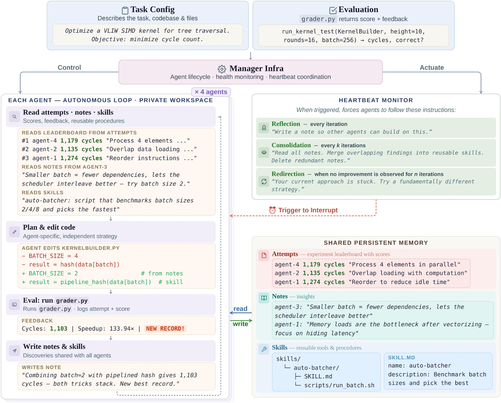

01研究背景与问题定义
开放式优化没有一套对所有阶段都合适的搜索流程。早期需要找新结构，后期可能需要精细调试；固定“检索父代—变异—评估”的模板容易把预算花在无效候选上。单个智能体虽能灵活安排工具调用，长期执行时仍会忘记失败方向、重复探索，或困在局部微调。
CORAL 将搜索控制交给自主代理，把跨尝试的持久知识交给共享文件系统。多代理不靠每轮同步会议决定行动，而是在隔离工作区独立探索，并通过候选、笔记和技能传递发现。它改变的不仅是候选生成器，还包括何时验证、何时整理知识和何时换方向的决定权。
| 对象 | 保存什么 | 怎样影响后续搜索 |
|---|---|---|
| attempts | 候选实现与真实评估结果 | 比较和复用代码，保留来源 |
| notes | 现象、失败、瓶颈与反思 | 减少重复试错，形成设计判断 |
| skills | 可复用程序、工具和步骤 | 把一次发现转成以后可调用的能力 |
02方法与技术路线
每个代理保有自己的上下文和工作区，评估器与持久记忆共享。心跳在此基础上提醒反思、整理或转向，而不接管每一步研究决策。
代理 A：独立方向
查阅相关经验 → 写候选 → 本地运行检查 → 必要时提交公共评估；保留自己的推理上下文。
代理 B：独立方向
读取别人的代码或知识后选择自己的尝试；无需等待代理 A 同步，也不共享活动工作区。
心跳控制带
每轮提醒记录；周期提醒整理笔记并提炼技能；停滞时提醒反思或转向。决策仍由代理作出。
自主搜索不是每次生成代码就立即交评估
代理可以先检查文件、比较旧候选、运行局部测试和修改实现，再决定是否消耗正式评估。固定搜索流程通常把一次候选提议直接计为一次评估，CORAL 则允许在同一次自主工作中消化多个内部操作。
因此评估次数下降有明确的系统含义：更少无效提交。但它不是所有计算成本同时下降的充分条件，因为本地执行与模型推理也消耗资源。应把公共评估效率、墙钟时间和推理成本分别讨论。
共享存储为什么不同于共享上下文
隔离工作区让代理可以修改代码而不互相覆盖；共享记忆通过符号链接可见，每个代理自行决定读什么。attempt 保存原始程序和结果，note 记录可解释的发现，skill 则把重复流程外化为可执行工具。三层分别承载证据、解释和行动能力。
这种间接协调允许代理探索不同路线后再吸收有用发现，减少即时对话带来的同步开销。代价是发现能否传播取决于写入质量和其他代理是否主动检索；共享目录本身不保证知识被正确使用。
心跳干预改变注意力，而不指定最优动作
反思心跳促进及时记笔记，整理心跳在多次尝试后要求复盘并提炼技能，停滞心跳提醒审查当前方向。触发可按迭代、时间或分数变化配置，也可由代理建立事件。
这些提示不构成确定性的“停滞就随机重启”算法。模型可能决定继续微调，也可能转向。理解这点很重要：论文提供的是保持长期研究行为的外部支架，效果仍依赖代理能否从评估与知识中作出有效判断。
论文原始结构图 · 点击对照

03实验设计与结果分析
自主安排是否减少无效评估
| 任务 | EvoX 终值 | CORAL 终值 | EvoX / CORAL 评估数 |
|---|---|---|---|
| Circle Packing ↑ | 2.6320 | 2.6360 | 48 / 11 |
| EPLB ↑ | 0.146 | 0.149 | 100 / 19 |
| PRISM ↑ | 26.26 | 26.26 | 16 / 3 |
| Cloudcast ↓ | 623.5 | 618.4 | 65 / 9 |
PRISM 的终值相同却少用评估，展示了搜索效率；其他行同时改善终值与评估数。11 项任务均取得最优终值、其中 8 项超过此前最好结果，是整体效用证据。不能把这些现象单独归因为记忆，因为自主控制与局部验证也一起改变。
共享经验是否超出“多跑几次”的收益
| 检验 | 任务 | 完整条件 | 控制条件 |
|---|---|---|---|
| 单代理知识积累 | Kernel cycles ↓ | 1350 | 1601（禁用知识） |
| 单代理知识积累 | Polyominoes ↑ | 80.2 | 77.3（禁用知识） |
| 四代理协同 | Kernel cycles ↓ | 1103 | 1180（独立四次的最好值） |
| 四代理协同 | Polyominoes ↑ | 84.2 | 80.8（独立四次的最好值） |
与独立四次最好值比较，比只对比单代理更能回答是否存在交流价值。共享条件仍领先，支持代理之间的知识或代码迁移产生互补收益。Kernel 四代理用了 596 次评估，单代理为 56 次，表明更好终值与更多总体探索同时存在；不能把协同增益称为免费的效率提升。
04贡献、局限与综合评价
贡献是把研究控制与研究记忆共同外化
CORAL 的核心不是多一个消息通道，而是允许代理自主安排搜索，又让发现以跨上下文可重用的形式存在。代码、观察与技能分别承载不同信息，异步组织则让这些积累在多条路线间传播。这是比某个固定演化算子更耐用的系统思想。
正式评估效率与完整研究成本不同
代理先在本地调试再提交，能够显著减少正式评估中的坏程序，这是值得保留的工程能力。但“用了更少 evaluator 调用”也可能意味着工作被搬到了未计入该指标的本地执行和 LLM 回合。终值、正式评估数和墙钟约束共同提供了一部分信息，仍不等于逐项测出最便宜的研究过程。应把局部工具时间、生成 token 与失败候选一并记录，检验自主控制是否在昂贵评估场景中特别有优势；这会比笼统宣称多代理更省算力更准确。
共享知识的价值不等于所有记录都可信
禁用知识消融说明记忆路径有贡献，但尚不能判断笔记、技能、代码复用各自承担多少作用。轨迹中“读取知识的尝试更容易改善”也可能含有选择偏差：代理可能只在识别到希望时才检索。相关性不能替代随机干预。
一种更有区分力的测试是维持共享代码与算力不变，随机延迟不同类别知识的可见时间，观察首次改进速度和策略重复率。如果只共享代码已复现多数收益，贡献更接近高效分布式搜索；若失败知识和技能额外降低重复探索，则支持更强的集体经验积累解释。现有消融支持共享确有价值，但知识组织机制仍有可分解空间。